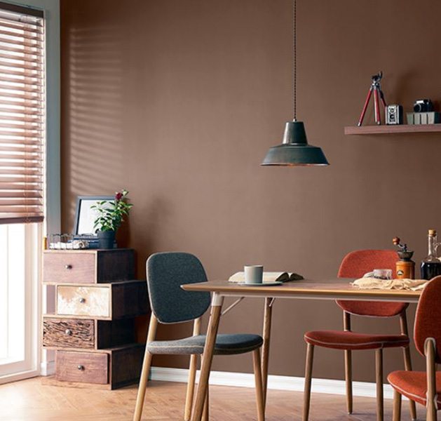

삼화 SNS
컬러로 행복을 나누는
삼화페인트 SNS와 함께 하세요.
검색
검색어 초기화
취소
전체
전체
인스타그램
유튜브
블로그

평범한 우드 소재의 책상에 페인트를 칠해보는건 어떨까요?
간단한 방법으로 책상의 일부만 칠해도 충분히 포인트가 될 수 있어요! :)
해당 sns로 이동
평범한 우드 소재의 책상에 페인트를 칠해보는건 어떨까요?
간단한 방법으로 책상의 일부만 칠해도 충분히 포인트가 될 수 있어요! :)
해당 sns로 이동
평범한 우드 소재의 책상에 페인트를 칠해보는건 어떨까요?
간단한 방법으로 책상의 일부만 칠해도 충분히 포인트가 될 수 있어요! :)
해당 sns로 이동
해당 sns로 이동
해당 sns로 이동
해당 sns로 이동
해당 sns로 이동
해당 sns로 이동
해당 sns로 이동
처음 페이지로
이전 페이지로
21
22
23
24
다음 페이지로
마지막 페이지로